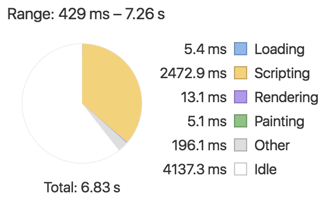
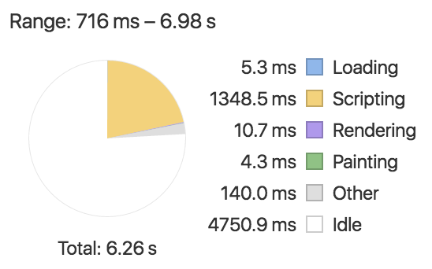

Ahead Of Time Compilation
https://github.com/tmakuch/aotProblem to solve
Loading...
Problem to solve
We need to get to the root - why application needs time to load inside the browser

Just In Time Compilation
Ahead Of Time Compilation
How does it work
- Code is statically analysed and it generates already compiled templates for the components.
- Our package is smaller since it does not require the compiler and all it dependecies.
- This give us smaller loading time and generating code to keep at it's minimum.
Caught in the act
Hello World!
...
const parentRenderNode:any = this.renderer.createViewRoot(this.parentElement);
this._el_0 = import3.createRenderElement(this.renderer,parentRenderNode,'h1',import3.EMPTY_INLINE_ARRAY,(null as any));
this._text_1 = this.renderer.createText(this._el_0,'Hello World!',(null as any));
this._text_2 = this.renderer.createText(parentRenderNode,'\n',(null as any));
...Required changes
- Add extra configuration to tsconfig.json.
- Change the aplication bootstraping process.
- Move compilation into build process.
tsconfig.json extra configuration
"angularCompilerOptions": {
"genDir": ".",
"entryModule": "src/app/modules/app.module#AppModule"
}Changes to application bootstraping
import { platformBrowserDynamic } from '@angular/platform-browser-dynamic';
import { AppModule } from './modules/app.module';
platformBrowserDynamic().bootstrapModule(AppModule);becomes
import { platformBrowser } from '@angular/platform-browser';
import { AppModuleNgFactory } from './modules/app.module.ngfactory';
platformBrowser().bootstrapModuleFactory(AppModuleNgFactory);Compilation using angulars compiler
"build": "npm run cleanup && webpack --config webpack.config.js -p"inside package.json scripts becomes
"ngc": "ngc",
"build": "npm run cleanup && npm run ngc && webpack --config webpack.config.js -p"Compilation using webpacks loader
{ test: /\.ts/, use: ['ng-router-loader', 'ts-loader', 'angular2-template-loader']}inside webpack module rules configuration becomes
{ test: /\.ts/, use: ['@ngtools/webpack'] }and new plugin needs to be defined:
new ngToolsWebpack.AotPlugin({
tsConfigPath: './tsconfig.json',
entryModule: path.join(__dirname, '../src/app/app.module#AppModule')
});Some numbers - JIT Compilation
Some numbers - AOT Compilation
Prerequisites
- Code needs to be statically analysable.
- Compiled templates needs to adhere to typescript rules.
Statically analysable code should
export all elements that it uses at generation
export NAVIGATION_ROUTES.map((route: RobinRoute): Route => ...
abstract class ActionBase { ...
export class Action extends ActionBase { ...becomes
export function routeMapper(route: RobinRoute): Route {...
export NAVIGATION_ROUTES.map(routeMapper);
export abstract class ActionBase { ...
export class Action extends ActionBase { ...Statically analysable code should
not use default exports
export default (something:any):any => ...becomes
export function someFunction(something:any):any { ...Statically analysable code should
use explicit importing
import * from 'somewhere';becomes
import { Something } from 'somewhere';Statically analysable code
There are no strict guidelines for making your code statically analysable.
Only the main idea behind the process:
Allow external code to access and use whats necessery
Templates adhering typescript rules - examples
- Only public properties should be used in the template.
- Respecting types.
- Matching call signature to function.
Templates adhering typescript rules
Templetes were not checked with typescript rules before, since they were dynamically analysed in the browser by javascript.
The golden rule: Now they also adhere to everything that separates Typescript from Javascript